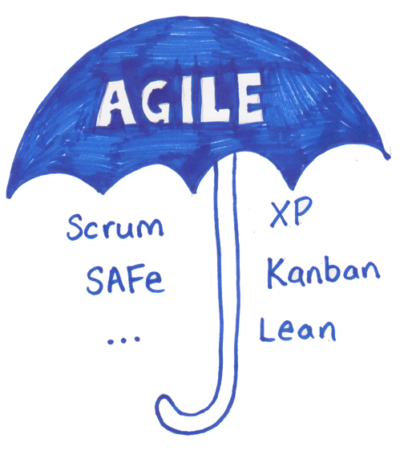
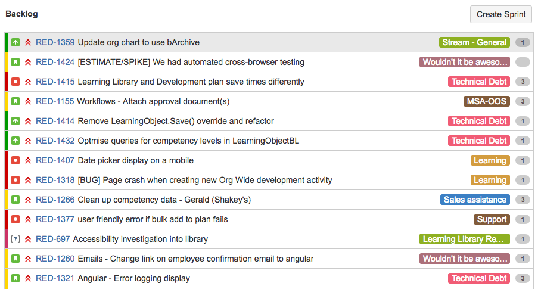
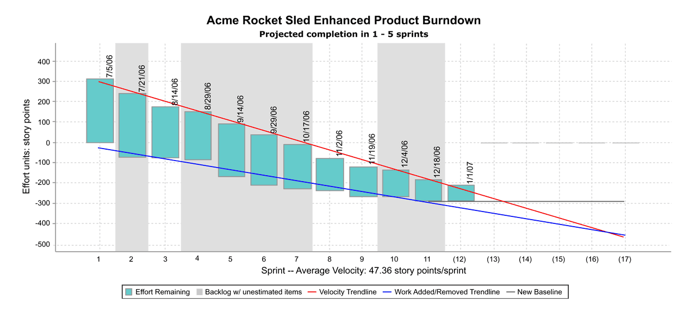
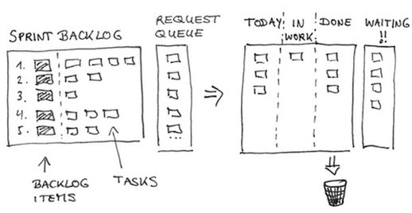
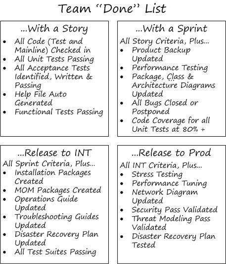
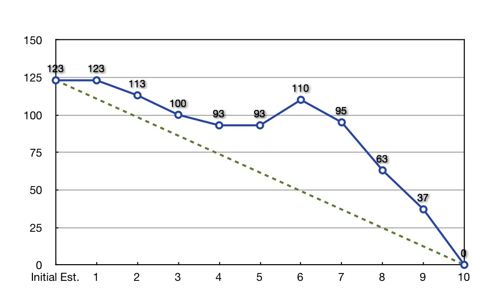

We don't do Scrum
The Agile Manifesto
- Individuals and interactions over processes and tools
- Working software over comprehensive documentation
- Customer collaboration over contract negotiation
- Responding to change over following a plan
The Agile Manifesto
- Individuals and interactions over processes and tools
- Working software over comprehensive documentation
- Customer collaboration over contract negotiation
- Responding to change over following a plan
Agile Frameworks
Scrum is like chess. You either play it as its rules state, or you don’t. Scrum and chess do not fail or succeed. They are either played, or not.
Ken Schwaber
The Scrum Framework
Roles
Artefacts
Activities
The Scrum Framework
Roles
Artefacts
Activities
5-9 team members
ScrumMaster
Product Owner
The Scrum Framework
Roles
Artefacts
Activities
Product Backlog
Release Burndown Chart
Sprint Backlog
Product Increment
Definition of Done
Sprint Burndown Chart
The Scrum Framework
Roles
Artefacts
Activities